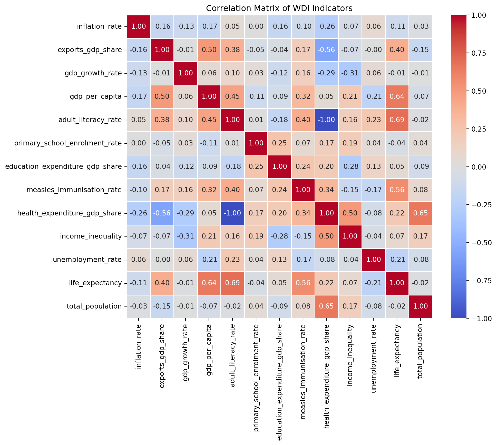
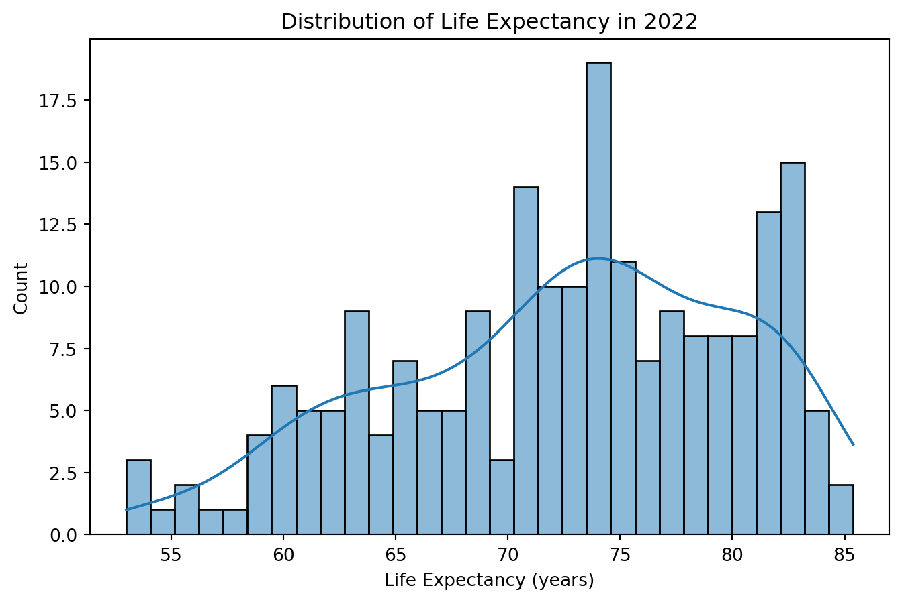
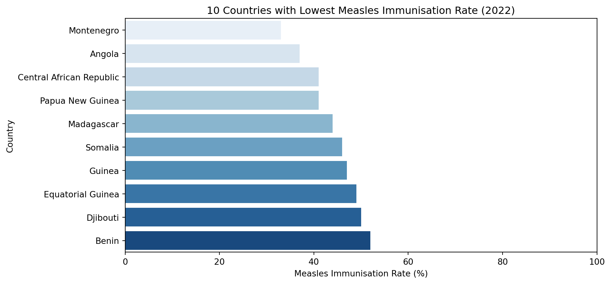
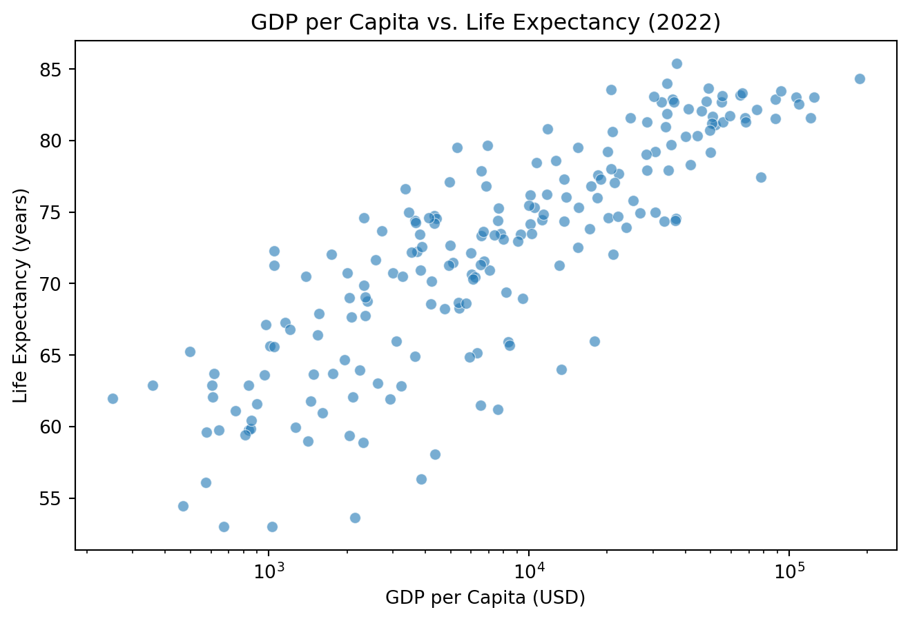
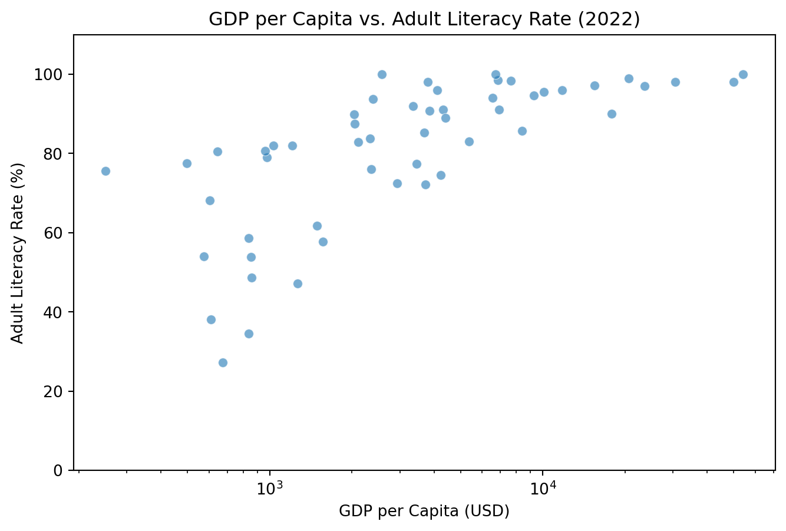

World Development Indicators Report 2022
This report analyzes key World Development Indicators (WDI) from 2022 to assess relationships between economic, education, and health variables.
Exploratory Data Analysis
Correlation Matrix
To identify meaningful relationships among key indicators, a correlation matrix is created.
- Life expectancy and adult literacy rate have a strong positive correlation of 0.69.
- Life expectancy and GDP per capita also have a strong positive correlation of 0.64.
- Life expectancy and measles immunization rate show a moderate positive correlation of 0.56.
As shown in Figure 1, the correlation matrix suggests that higher GDP per capita, literacy rate, and immunization rate are linked to higher life expectancy.
Summary Statistics
To better understand the distribution of key indicators, summary statistics are computed.
Summary Statistics
| Statistic | Life Expectancy | GDP per Capita | Adult Literacy Rate | Measles Immunization Rate |
|---|---|---|---|---|
| Count | 209.000000 | 207.000000 | 54.000000 | 193.000000 |
| Mean | 72.416519 | 20520.336828 | 80.971722 | 84.103627 |
| Std Dev | 7.713322 | 30640.741594 | 18.430839 | 15.413050 |
| Min | 52.997000 | 250.634225 | 27.280001 | 33.000000 |
| 25% | 66.782000 | 2599.752468 | 74.760000 | 76.000000 |
| 50% (Median) | 73.514634 | 7606.237525 | 85.452465 | 90.000000 |
| 75% | 78.475000 | 27542.145523 | 95.875000 | 96.000000 |
| Max | 85.377000 | 226052.001905 | 100.000000 | 99.000000 |
Table 1 provides an overview of key descriptive statistics for selected indicators.
- Life expectancy ranges from 52.99 to 85.38 years with a mean of 72.42 years.
- GDP per capita varies widely, with values ranging from $250.63 to $226,052, suggesting global economic disparities.
- Adult literacy rate remains high, with a median of 85.45%, but some countries report much lower rates, reaching as low as 27.28%
- Measles immunization rate varies widely, with some countries reporting as low as 33%, which may increase the risk of outbreaks.
Key Indicator Visualizations
Life Expectancy Distribution

- Most countries have a life expectancy between 67 and 82 years.
- The distribution is slightly left-skewed, suggesting that a few countries have significantly lower life expectancy, which could be due to socio-economic instability and lack of healthcare (Mondal and Shitan 2013).
10 Countries with the Lowest Measles Immunization Rates

The 10 countries with the lowest measles immunization rates have immunization levels below 55 percent, making them more vulnerable to measles outbreaks and other associated health risks.
GDP per Capita vs. Life Expectancy and Adult Literacy Rate


There is a clear positive relationship between GDP per capita and both life expectancy and literacy rate. Countries with higher GDP per capita generally have longer life expectancy and higher literacy rates. However, some low-GDP countries still achieve high literacy.
Hypothesis Testing
To determine whether differences in GDP per capita, literacy rate, and immunization rate significantly impact life expectancy, T-tests are performed.
Life Expectancy and GDP per capita
# Remove NaN values before calculating median
df_ttest = wdi_df.dropna(subset=["gdp_per_capita"
, "life_expectancy"])
# Split dataset into High and Low GDP groups based on median GDP
median_gdp = df_ttest["gdp_per_capita"].median()
high_gdp = df_ttest[df_ttest["gdp_per_capita"] >= median_gdp][
"life_expectancy"]
low_gdp = df_ttest[df_ttest["gdp_per_capita"] < median_gdp][
"life_expectancy"]
# Run T-test
t_stat, p_value = ttest_ind(high_gdp, low_gdp, equal_var=False)
print(f"T-statistic: {t_stat:.3f}, P-value: {p_value:.5f}")T-statistic: 13.643, P-value: 0.00000- The p-value is < 0.001, so the null hypothesis is rejected.
- There is a statistically significant difference in life expectancy between high-GDP and low-GDP countries.
Life Expectancy and Adult Literacy Rate
# Remove NaN values before calculating median
df_ttest = wdi_df.dropna(subset=["adult_literacy_rate"
, "life_expectancy"])
# Split dataset into High and Low adult literacy rate groups based on median rate
median_alr = df_ttest["adult_literacy_rate"].median()
high_alr = df_ttest[df_ttest["adult_literacy_rate"] >= median_alr][
"life_expectancy"]
low_alr = df_ttest[df_ttest["adult_literacy_rate"] < median_alr][
"life_expectancy"]
# Run T-test
t_stat, p_value = ttest_ind(high_alr, low_alr, equal_var=False)
print(f"T-statistic: {t_stat:.3f}, P-value: {p_value:.5f}")T-statistic: 6.105, P-value: 0.00000- The p-value is < 0.001, so the null hypothesis is rejected.
- There is a statistically significant difference in life expectancy between high-literacy and low-literacy countries.
Life Expectancy and Measles Immunization Rate
# Remove NaN values before calculating median
df_ttest = wdi_df.dropna(subset=["measles_immunisation_rate"
, "life_expectancy"])
# Split dataset into High and Low measles immunization rate groups
# based on median rate
median_mir = df_ttest["measles_immunisation_rate"].median()
high_mir = df_ttest[df_ttest["measles_immunisation_rate"] >= median_mir][
"life_expectancy"]
low_mir = df_ttest[df_ttest["measles_immunisation_rate"] < median_mir][
"life_expectancy"]
# Run T-test
t_stat, p_value = ttest_ind(high_mir, low_mir, equal_var=False)
print(f"T-statistic: {t_stat:.3f}, P-value: {p_value:.5f}")T-statistic: 7.953, P-value: 0.00000- The p-value is < 0.001, so the null hypothesis is rejected.
- There is a statistically significant difference in life expectancy between countries with high and low measles immunization rates.
Summary of T-test Findings
| Indicator Compared | T-Statistic | P-Value | Conclusion |
|---|---|---|---|
| High vs. Low GDP per Capita | 13.643 | <0.001 | Significant difference in life expectancy |
| High vs. Low Adult Literacy Rate | 6.105 | <0.001 | Significant difference in life expectancy |
| High vs. Low Measles Immunization Rate | 7.953 | <0.001 | Significant difference in life expectancy |
As seen in Table 2, the T-test results confirm that GDP per capita, literacy rate, and measles immunization rate are all significantly associated with life expectancy.
Regression Analysis
A multiple linear regression model is used to examine the relationship between GDP per capita, adult literacy rate, and measles immunization rate with life expectancy.
Predicting Life Expectancy
# Drop rows with NaN values
df_ols = wdi_df.dropna(subset=["gdp_per_capita"
, "adult_literacy_rate"
, "measles_immunisation_rate"
, "life_expectancy"])
# Define dependent and independent variables
X = df_ols[["gdp_per_capita"
, "adult_literacy_rate"
, "measles_immunisation_rate"]]
X = sm.add_constant(X) # Add intercept
y = df_ols["life_expectancy"]
# Fit regression model
model = sm.OLS(y, X).fit()
# Display model summary
model.summary()| Dep. Variable: | life_expectancy | R-squared: | 0.587 |
| Model: | OLS | Adj. R-squared: | 0.561 |
| Method: | Least Squares | F-statistic: | 22.74 |
| Date: | Tue, 25 Feb 2025 | Prob (F-statistic): | 2.65e-09 |
| Time: | 14:15:23 | Log-Likelihood: | -154.15 |
| No. Observations: | 52 | AIC: | 316.3 |
| Df Residuals: | 48 | BIC: | 324.1 |
| Df Model: | 3 | ||
| Covariance Type: | nonrobust |
| coef | std err | t | P>|t| | [0.025 | 0.975] | |
| const | 43.3817 | 4.065 | 10.673 | 0.000 | 35.209 | 51.554 |
| gdp_per_capita | 0.0002 | 8.77e-05 | 2.392 | 0.021 | 3.34e-05 | 0.000 |
| adult_literacy_rate | 0.1907 | 0.045 | 4.272 | 0.000 | 0.101 | 0.280 |
| measles_immunisation_rate | 0.1013 | 0.047 | 2.178 | 0.034 | 0.008 | 0.195 |
| Omnibus: | 12.900 | Durbin-Watson: | 1.935 |
| Prob(Omnibus): | 0.002 | Jarque-Bera (JB): | 13.809 |
| Skew: | -1.037 | Prob(JB): | 0.00100 |
| Kurtosis: | 4.438 | Cond. No. | 6.37e+04 |
Notes:
[1] Standard Errors assume that the covariance matrix of the errors is correctly specified.
[2] The condition number is large, 6.37e+04. This might indicate that there are
strong multicollinearity or other numerical problems.
The regression model provides insights into the predictors of life expectancy. The model explains approximately 58.7 percent of the variability in life expectancy.
All GDP per capita, adult literacy rate, and measles immunization rate are statistically significant predictors of life expectancy, with p-values less than 0.05.
The coefficients of the model suggest that:
- A one-unit increase in GDP per capita is associated with a 0.0002 increase in life expectancy, controlling for other variables.
- A one-percentage point increase in the adult literacy rate is associated with a 0.1907 increase in life expectancy.
- A one-percentage point increase in the measles immunization rate is associated with a 0.1013 increase in life expectancy.
The exploratory data analysis highlights that GDP per capita, adult literacy rate, and measles immunization rate are associated with life expectancy, but this does not imply a direct cause-and-effect relationship.
References
Mondal, Md Nazrul Islam, and Mahendran Shitan. 2013. “Impact of Socio-Health Factors on Life Expectancy in the Low and Lower Middle Income Countries.” Iranian Journal of Public Health 42 (12): 1354–62. https://www.ncbi.nlm.nih.gov/pmc/articles/PMC4441932/.
The World Bank Group. 2025. “World Development Indicators.” https://databank.worldbank.org/source/world-development-indicators.